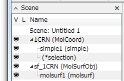
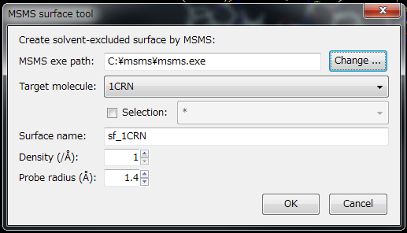

MsmsMolSurface
分子表面の作成¶
手軽にGUIから分子表面を作成することができます． バージョン2.0.1以降はCueMol2自体で分子表面を生成できます．
メニュー「Tools」→「Mol surface generation ...」を実行すると，以下のようなダイアログが現れます．

Target moleculeの指定¶
次に，Target moleculeを指定します． 現在のシーンに１分子しかない場合は指定変更は不要ですが， 複数ある場合は"Target molecule:"の横のdropdown listboxから表面を作成する分子を指定してください．
Selectionの指定¶
分子の一部分に対してだけsurfaceを作成することも可能です． Targetの下に，"Selection" checkboxがありますが，これをチェック状態にすると，右横の分子選択listboxが有効になります．（すでに分子の一部が選択された状態だとはじめからチェック状態になっています） たとえば，タンパク部分に対してのみ表面を作成するならば，listboxから"protein"を選びます． Chain Aに対してのみ作成したい場合は，"chain A"と入力します．
分子オブジェクト中には，水分子が入っている場合がありますが， 水は入れずに分子表面を作成するのが普通だと思います． しかし，既定では(=全選択)になっているため，水や基質などすべての原子に対して表面が計算されてしまいます． なので，少々めんどくさいですが，ここでは必ず水分子を除くような選択文を入れる*ようにしてください．
その他¶
生成される分子表面オブジェクトの名前¶
作成されるsurfaceの名前は，"Surface name:"の部分で指定できます． 既定では，"sf_"+target分子名 になるようになっていますが，入力して直接指定することもできます．
ポリゴンの細かさ¶
Densityは，作成されるsurfaceのきめ細かさです．値を増やすと，きめ細かさが増します． きめ細かさが増すと，surfaceの計算や読み込みに時間がかかり，memoryやdiskを多く消費するようになります．
既定では1ですが，10 kDa程度の小さな分子なら5やそれ以上にしたほうが，よりきれいな表面になります．
逆に，100 kDa以上の巨大分子の場合は，1〜2程度にしておいた方がスピードが速いです．
Probe radius¶
Probe radiusは表面を計算するときに使用するprobeの半径を指定します． 既定では水溶媒の接触表面を計算することをを想定して，水分子の半径1.4Åになっています．
分子表面生成の実行¶
以上の設定を終え，OKボタンを押すとmsmsが実行され，surfaceオブジェクトが作成されます．

この例では，1CRN (crambin)に対してsf_1CRNという(MolSurfObj型の)objectが作成されています．
既定ではsurface objectには1つのmolsurf rendererが作成されます． rendererのtargetプロパティー(着色のさい参照される分子オブジェクト名)として， surfaceを作成するのに使用した分子オブジェクト名が設定され， CPKColoringの着色になるように設定されています．

{kind=link}
{kind=link}
この状態から，Colorパネルから，他の分子に対するrendererと同様にPaint, CPK(左), Bfac(中央), Rainbow(右)などの着色(coloring)に変更できます．
詳しくは，分子表面の表示を参照してください．
生成されたsurface object¶
生成されたsurface objectは，シーンをqscファイルに保存した時に，qscファイル中にバイナリー形式で埋め込まれ，一緒に保存されます． そのため，次回再度CueMolを起動して読み込んだ場合も，保存時と同様に分子表面が表示されるはずです．
Surface objectの再生成¶
Version 2.2.1.330以降のCueMolでは，いったん作成したMolSurfObj objectを，mesh densityを変えて簡単に再生成できるようになりました．
Scene panelで再生成したいMolSurfObjを右クリックし，表示されるcontext menuの「Regenerate surface...」をクリックすると，上記のMol surface tool dialogが表示されます． Densityを変更してOK buttonを押すと指定したdensityでsurfaceが再生成されます．

ただし，古いCueMolで作成したscene fileを読み込んだ場合は，MolSurfObj objectの元となるMolCoord objectの情報が保存されていないため，この機能は利用できません．
Version 2.0.0以前の場合¶
以下，Version 2.0.0以前の場合の説明です． 分子表面の生成にはmsmsという外部プログラムが必要になります．
msmsのinstall¶
msmsは http://mgltools.scripps.edu/downloads#msms からdownloadしてください． Windowsの場合はzipファイルになっていますが，downloadしたら，適当な場所に展開してください． ここでは，C:\msms\以下に展開したと仮定します．(c:\msms\msms.exeがある状態にする)
Windows7の場合，netからdownloadした実行ファイルを実行すると，警告ダイアログが出てきます． なので，一度実行しておいて警告が出ないようにしておきます．
MacOS Xはなぜか今更PowerPC版しか配布されていないようです． Intel機でも，OSに付属のemulator (Rosetta)をインストールすれば実行可能です．
msms実行ファイルの設定¶
msmsをinstall後，CueMol2を起動し，適当なPDBファイルを開きます．
次に，メニュー「Tools」→「MSMS surface generation ...」を実行すると，以下のようなダイアログが現れます．

まず，ダイアログの一番上の部分でmsmsの実行ファイルを設定しておきます．"Change..."ボタンを押すと，ファイルを開くダイアログが出てくるので，そこで，先ほど展開コピーしたmsmsのファイル(Windowsならmsms.exe，MacOS XやLinuxならmsms)を指定します．（上図ではすでに指定した状態になっています） この設定は，一度行えば設定は記憶されるので，次回からは不要になります．